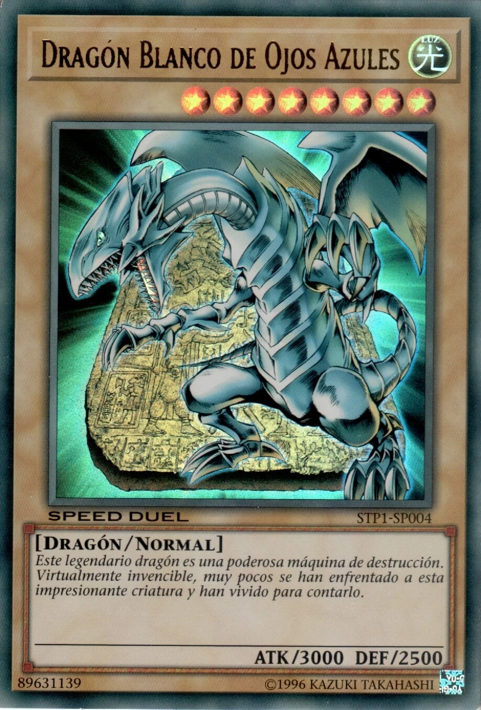

El Dragón Blanco de Ojos Azules es uno de los monstruos más icónicos y poderosos del universo de Yu-Gi-Oh!. Reconocido por su diseño imponente y su rareza legendaria, es la carta insignia del personaje Seto Kaiba.